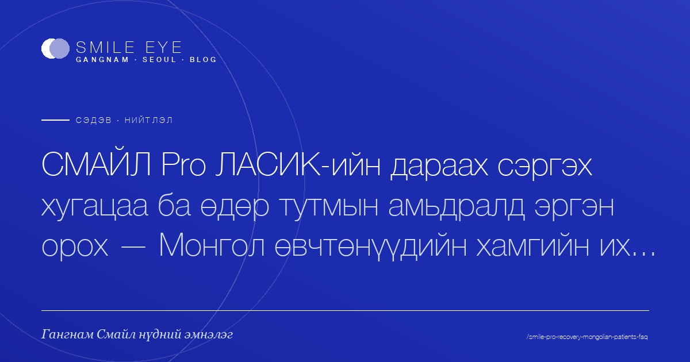
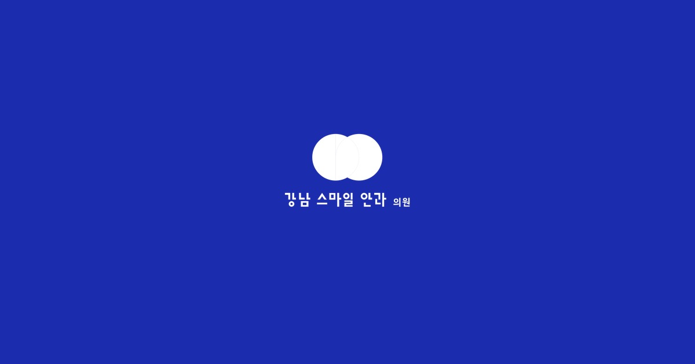
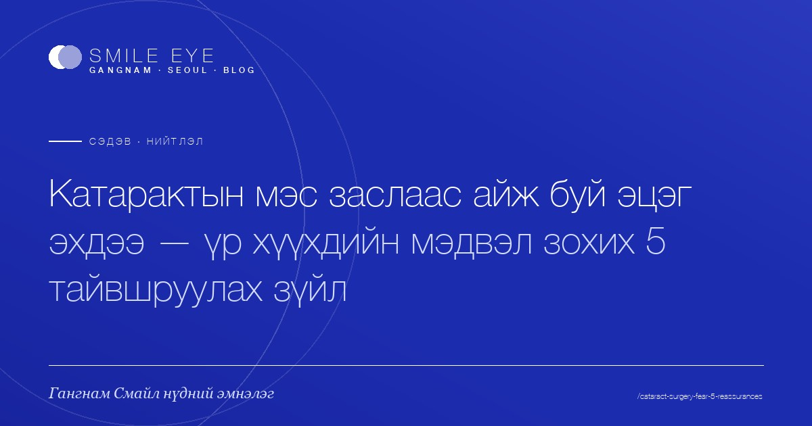
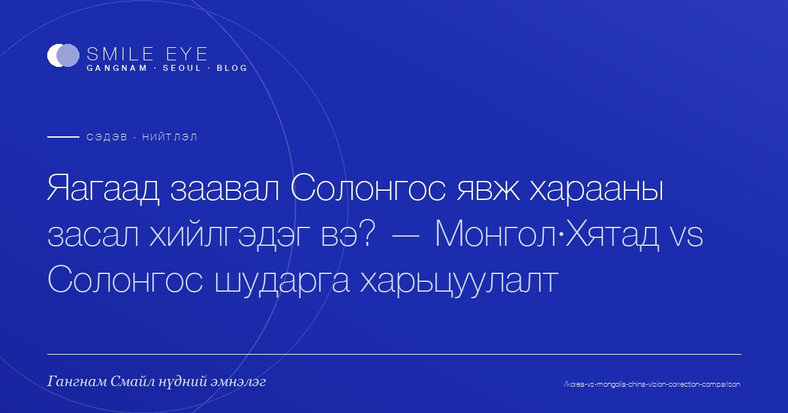
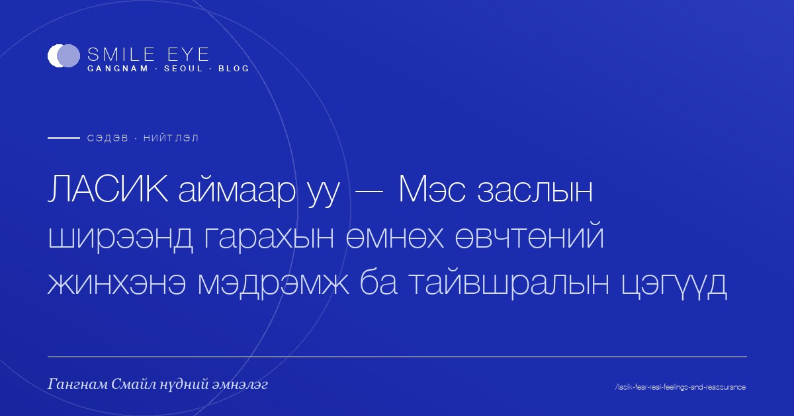
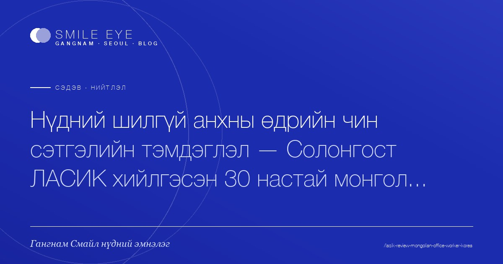
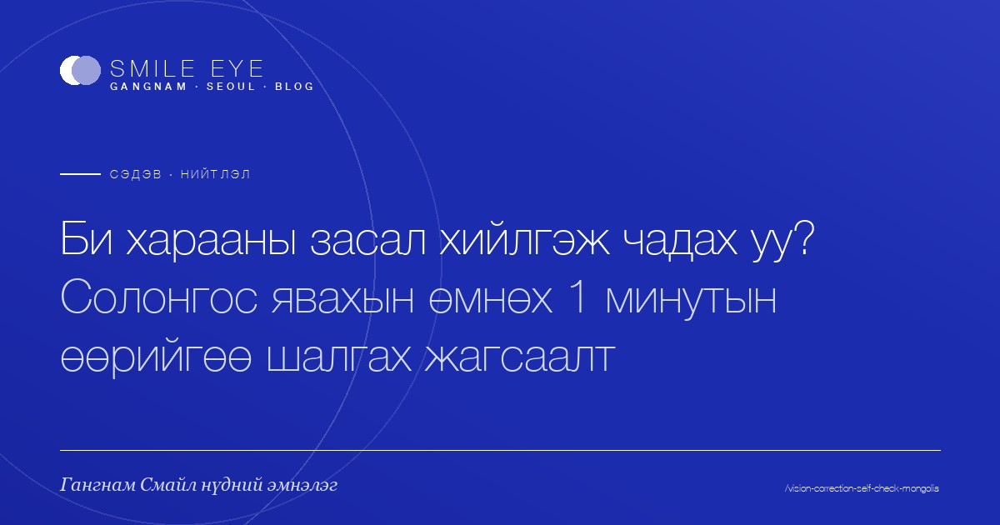

Гангнам Смайл блог
Харааны засал · Монгол үйлчлүүлэгчид · Эмнэлгийн зөвлөгөө

СМАЙЛ Pro ЛАСИК сэргэх хугацаа — Монгол өвчтөнүүдийн 5 асуулт
СМАЙЛ Pro ЛАСИК-ийн дараах сэргэх хугацаа, өдөр тутмын амьдралд эргэн орох цаг, нислэгийн төлөвлөгөө. Монгол өвчтөнүүдийн хамгийн их асуудаг 5 асуултад Гангнам Смайл нүдний эмнэлэг хариулна.
2026-05-12 · 6 мин
Катарактын мэс заслаар пресбиопийг хамт засах уу? Олон фокустай IOL харьцуулалт
Катарактын мэс заслаар пресбиопийг нэг дор засаж болох уу? Олон фокустай ба нэг фокустай IOL-ийн ялгаа, тохиромжтой хүн, өртөг, сэргэлтийг харьцуулна.
2026-05-11 · 5 мин
Катарактын мэс заслын дараа хэзээ ном уншиж, машин жолоодох вэ?
Катарактын мэс заслын дараах ном унших, машин жолоодох, гэрийн ажилд эргэн орох хугацааг үе шаттайгаар тайлбарлав. Сэргэх хугацаа, анхаарах зүйл, гэр бүлийн дэмжлэгийг нэгтгэв.
2026-05-11 · 8 мин
Катарактын мэс заслаас айдаг эцэг эхдээ — эмчийн 5 тайвшруулга
Катарактын мэс заслаас айж буй эцэг эхээ хэрхэн тайвшруулах вэ? Өвдөлт, хугацаа, хүндрэл, сэргэлт — хүүхдүүдийн хамгийн их асуудаг 5 асуултад эмчийн зүгээс хариулна.
2026-05-11 · 6 мин
Dream Lens-ээр хүүхдийн харааг хамгаалах: ЛАСИК-ийн өмнөх сонголт
Хүүхдийн миопи хурдан даамжирч байна уу? Dream Lens-ээр шилгүй хүүхдийн миопи удирдах арга болон ЛАСИК хийлгэх боломжит насыг эцэг эхчүүдэд зориулан тоймлов.
2026-05-11 · 6 мин
Нүд хатах эмгэгтэй үед ЛАСИК хийлгэж болох уу? Аюулгүй гарын авлага
Нүд хатах эмгэгтэй үед ЛАСИК хийлгэж болох эсэх, хагалгааны өмнөх арчилгаа болон аюулгүй мэс заслыг сонгох шалгуурыг Гангнам Смайл нүдний эмнэлэг танилцуулж байна. Монгол хэлээр зөвлөгөө боломжтой.
2026-05-11 · 3 мин
Бусад Солонгос нүдний эмнэлэг vs Гангнам Смайл — 5 ялгаа
Солонгосын нүдний эмнэлэг харьцуулж байна уу? Гадаад өвчтөний өнцгөөс Гангнам Смайл бусад эмнэлгээс юугаараа ялгаатайг үнэ, орчуулга, сэтгэгдэл, хяналт гэсэн 5 шалгуураар цэгцэллээ.
2026-05-11 · 6 мин
Нүдний шилний насан туршийн зардал vs ЛАСИК — аль нь хэмнэлттэй вэ?
20-30 насныхны хамгийн их асуудаг асуулт. Нүдний шил, контакт линзийг 40 жил хэрэглэх зардал болон ЛАСИК нэг удаагийн зардлыг шударгаар харьцуулж, Монголоос Солонгос хүртэлх нийт зардлыг танилцуулна.
2026-05-11 · 8 мин
Шилний насан туршийн зардал vs ЛАСИК 1 удаа — аль нь хэмнэлттэй вэ?
Нүдний шил, контакт линзний насан туршийн зардлыг ЛАСИК 1 удаагийн зардалтай 30 жилийн хугацаагаар харьцуулна. Далд зардал, сэргэх хугацаа, Монголоос Солонгос явах нийт зардлыг тоймлов.
2026-05-11 · 8 мин
Өндөр зэргийн миопи -8.00, ЛАСИК боломжгүй бол? ICL шийдэл болж чадна
-8.00-аас дээш өндөр зэргийн миопитой тул ЛАСИК хийх боломжгүй гэсэн оношлогоо авсан уу? Эвэрт зүсэхгүй ICL линз суулгах хагалгаа яагаад өөр сонголт болохыг өртөг, сэргэлт, аюулгүй байдлын хамт энгийнээр тайлбарлая.
2026-05-11 · 6 мин
Ахлах 12-р ангийн хүүхдийн ЛАСИК — Элсэлтийн шалгалтын дараа шууд хийж болох уу?
Элсэлтийн шалгалт өгсөн 12-р ангийн хүүхдийн ЛАСИК буюу хараа засалд бэлдэж буй эцэг эхчүүдэд зориулсан гарын авлага. Тохиромжтой хугацаа, аюулгүй байдал, сэргэх хугацаа, их сургуульд орохоос өмнөх төлөвлөгөө.
2026-05-11 · 7 мин
ICL ба ЛАСИК-ийн ялгаа — Монгол өвчтөнүүдэд зориулсан 5 зүйл
ICL ба ЛАСИК-ийн алийг сонгох вэ? Эвэртийн зузаан, миопийн зэрэг, сэргэх хугацаа, өртгийг үндэслэн хоёр хагалгааны ялгааг 5 гол зүйлээр харьцуулан тайлбарлав.
2026-05-11 · 5 мин
Инчон нисэх буудлаас Каннам хүртэл: Солонгост ирсэн эхний өдрийн орчуулга, замын чиглэлийн заавар
ЛАСИК, СМАЙЛ зөвлөгөө авахаар Солонгост ирсэн эхний өдөр Инчон нисэх буудлаас Каннам нүдний эмнэлэг хүртэлх зам, орчуулга, хоол, валют солих, sim картыг нэг дор эмхэтгэв.
2026-05-11 · 7 мин
Нүдний шил үгүй анхны өдөр: Солонгост ЛАСИК хийлгэсэн 30-тай монгол ажилтны сэтгэгдэл
Солонгост ЛАСИК хагалгаа хийлгэсэн 30-тай монгол ажилтны үнэн сэтгэгдэл. Үнэ, сэргэх хугацаа, өдөр тутамд эргэн орох, Монгол болон Солонгосын ЛАСИК-ийн ялгааг нэг ЛАСИК сэтгэгдэлд эмхэтгэлээ.
2026-05-11 · 8 мин
Солонгост хараа засварлах нийт зардал — хагалгаа, нислэг, зочид буудал, орчуулга
Солонгосын ЛАСИК хагалгааны бодит зардал хэд вэ? Хагалгааны төлбөрөөс гадна нислэг, зочид буудал, орчуулга, хоолны зардлыг нэгтгэсэн нийт төсвийг Монгол үйлчлүүлэгчдэд зориулан танилцуулъя.
2026-05-11 · 7 мин
Солонгост ЛАСИК хийлгэх нийт зардал: онгоц, зочид буудал хамт
Солонгост ЛАСИК, СМАЙЛ хагалгаа хийлгэхэд зөвхөн хагалгааны төлбөр биш, онгоц, зочид буудал, орчуулга бүгдийг нэмсэн жинхэнэ нийт зардлыг үе шаттай тайлбарлав. Монгол өвчтөнд зориулсан гарын авлага.
2026-05-11 · 8 мин
Солонгост хараа засуулах нийт зардал: хагалгаа, нислэг, зочид буудал
Солонгост хараа засуулахад хагалгааны төлбөрөөс гадна нислэг, зочид буудал, орчуулга зэргийг нэмбэл хэдэн төгрөг болох вэ? Монголоос ирэх үйлчлүүлэгчдэд зориулсан илэн далангүй зардлын гарын авлага.
2026-05-11 · 7 мин
Монголоос Солонгост хараа засуулах аялал: бодит хуваарь
Монголоос Солонгост ЛАСИК, СМАЙЛ хийлгэхэд яг хэдэн өдөр шаардлагатай вэ? Нислэгийн өмнөх өдрөөс буцаж ирсний дараах өдөр хүртэлх Гангнам Смайл нүдний эмнэлгийн өвчтөнүүдийн бодит хуваарь.
2026-05-11 · 8 мин
Яагаад заавал Солонгос вэ? Монгол·Хятад vs Солонгос харааны засал харьцуулалт
Монгол, Хятад, Солонгосын харааны заслыг үнэ, технологи, аюулгүй байдал, дараах хяналт, нийт аяллын зардлаар шударгаар харьцуулсан гарын авлага.
2026-05-11 · 8 мин
Солонгосын одод ямар хараа засал хийлгэдэг вэ? K-pop тренд
K-pop одод болон Солонгосын алдартнуудын сонгодог хараа заслын хагалгааг харьцуулан тайлбарлав. ЛАСИК, СМАЙЛ, ICL-ийн ялгаа, сэргэх хугацаа, Монгол үйлчлүүлэгчдэд хэрэгтэй мэдээлэл.
2026-05-11 · 6 мин
ЛАСИК 5 жилийн дараа хараа? Дахин муудах өгөгдлөөр харъя
ЛАСИК хийлгээд 5, 10 жилийн дараа хараа хэрхэн өөрчлөгддөг вэ? Дахин муудах хувь, шалтгаан, давтан хагалгааны боломжийг урт хугацааны хяналтын өгөгдөлд тулгуурлан тайлбарлав.
2026-05-11 · 7 мин
Хуримын өмнөх ЛАСИК: сүйт бүсгүйн хуваарь
Хуримын өмнө ЛАСИК хийлгэхээр төлөвлөж байна уу? Сүйт бүсгүйн нүүр будалт, хуримын зураг авалт, бал сараа харгалзан үзсэн хараа засалын хуваарийг Гангнам Смайл нүдний эмнэлгээс танилцуулж байна.
2026-05-11 · 6 мин
Томилолтод явдаг ажилтны ЛАСИК-ийн дараах өдөр тутмын 5 өөрчлөлт
Нислэг, уулзалт, шөнийн ажил их хийдэг ажилтнуудын ЛАСИК-ийн дараа хамгийн их өөрчлөгдсөн 5 мөчийг эмхэтгэв. Сэргэх хугацаа, зардал, томилолтын төлөвлөгөөг нэг дор шалгаарай.
2026-05-11 · 6 мин
ЛАСИК амжилтгүй болсон тохиолдол: аюулын дохио ба урьдчилан сэргийлэх арга
ЛАСИК, СМАЙЛ, ICL зэрэг харааны заслын амжилтгүй тохиолдолд давтагдан гардаг аюулын дохио, гаж нөлөөний төрөл, урьдчилан сэргийлэх аргуудыг өвчтөний өнцгөөс эмхэтгэв.
2026-05-11 · 8 мин
ЛАСИК-аас айж байна — Хагалгааны өмнөх 5 тайвшруулах зөвлөмж
ЛАСИК-аас айх нь жам ёсны мэдрэмж. Хагалгааны өмнө өвчтөнүүдийн мэдэрсэн жинхэнэ айдас, тайвшралын цэгүүд болон харааны заслын гаж нөлөөний талаар чин үнэнч тайлбар.
2026-05-11 · 7 мин
ЛАСИК аймшигтай юу? Хагалгааны өмнөх 5 тайвшралын зөвлөмж
ЛАСИК-аас айх нь хэвийн зүйл. Хугаралын засалын гаж нөлөө, хагалгааны өмнөх түгшүүр, сэргэх үеийн санаа зовнилыг тайлбарлаж, тайвшрах боломжтой тодорхой зөвлөмжүүдийг танилцуулна.
2026-05-11 · 7 мин
ЛАСИК аймаар уу? Мэс заслын өмнөх жинхэнэ мэдрэмж ба тайвшралын цэгүүд
ЛАСИК-аас айх нь жам ёсны зүйл. Мэс заслын өмнө өвчтөнүүдийн жинхэнэ мэдрэмж, харааны заслын гаж нөлөөний талаарх санаа зовнилыг хэрхэн намдаах тухай чин сэтгэлээсээ хүргэе.
2026-05-11 · 6 мин
ЛАСИК-ийн дараа 1, 5, 10 жил — хараа үнэхээр хадгалагдах уу?
ЛАСИК-ийн урт хугацааны үр дүн сонирхож байна уу? Гангнам Смайл-ийн 25,000 удаагийн өгөгдөл болон 1, 5, 10 жилийн дараах өвчтөнүүдийн жишээгээр хараа, дахин засал, гаж нөлөөг тоймлов.
2026-05-11 · 6 мин
ЛАСИК-ийн дараа бокс, MMA хийж болох уу? Тулааны спортын буцах гарын авлага
ЛАСИК-ийн дараа бокс, MMA, тулааны спортод эргэн орох боломжтой эсэх, хэзээнээс аюулгүй, ямар хамгаалалтын хэрэгсэл хэрэгтэйг шат дараатай тайлбарлав.
2026-05-11 · 6 мин
ЛАСИК-ийн дараа компьютер, сошиал хэзээ? Өдрөөр сэргэлтийн хуваарь
ЛАСИК-ийн дараа компьютер, сошиал сүлжээ, дасгал, нүүр будалт хэдэн өдрөөс боломжтой вэ? Хагалгааны өдрөөс 1 сар хүртэлх өдөр тутмын сэргэлтийн хуваарийг танилцуулж байна.
2026-05-11 · 7 мин
ЛАСИК-ийн дараа компьютер, SNS хэдэн өдрийн дараа? Өдрөөр сэргэлтийн хуваарь
ЛАСИК-ийн дараа компьютер, SNS, дасгал, нүүр будалт хэдэн өдрөөс боломжтой вэ? Хагалгааны өдрөөс 1 сар хүртэлх өдөр тутмын үйл ажиллагаа, ЛАСИК сэргэлтийн хуваарийг эмхэтгэлээ.
2026-05-11 · 6 мин
Нүдний шил үгүй анхны өдөр — Солонгост ЛАСИК хийлгэсэн 30 настай монгол ажилтны сэтгэгдэл
Солонгост ЛАСИК хийлгэсэн 30 настай монгол ажилтны шударга сэтгэгдэл. Зардал, сэргэх хугацаа, амралтын төлөвлөгөө, орчуулга — Гангнам Смайл нүдний эмнэлгийн нэгдсэн гарын авлага.
2026-05-11 · 8 мин
Эрэгтэй, эмэгтэй хүмүүсийн ЛАСИК-ийн сэтгэл ханамжид ялгаа байдаг уу?
ЛАСИК, СМАЙЛ хагалгааны сэтгэл ханамж хүйсээс хамаарч ялгаатай юу? Сэргэх хурд, нүд хатах, нүүр будалт, дасгал хөдөлгөөнд эргэн орох гэх мэт эрэгтэй, эмэгтэй хүмүүсийн анхаардаг зүйлсийг харьцуулан тоймлов.
2026-05-11 · 3 мин
Эцэг эхийн катаракт: Солонгост хагалгаа хийлгэх хамгийн тохиромжтой үе хэзээ вэ?
Эцэг эхийнхээ катарактын мэс заслыг Солонгост хийлгэхээр төлөвлөж байна уу? Хагалгааны зөв цаг, бэлтгэл хуваарь, Гангнам Смайл эмнэлгийн катарактын журам болон гэр бүлийн дагалдан явах удирдамжийг танилцуулна.
2026-05-11 · 8 мин
Эцэг эхээ дагуулан Солонгост катарактын мэс засал хийлгэх бүрэн гарын авлага
Эцэг эхийнхээ катарактын мэс заслын улмаас Солонгос явахаар бэлдэж байна уу? Онгоцны тийз, тэргэнцэр, зочид буудал, орчуулга — үр хүүхэд нь юу анхаарах ёстойг алхам алхмаар тайлбарлана.
2026-05-11 · 8 мин
Хүүхдийн ЛАСИК: Хэдэн наснаас хийлгэж болох вэ? Эцэг эхчүүдэд зориулсан гарын авлага
Хүүхдийнхээ хараа жил бүр муудаж байвал ЛАСИК хэзээ хийлгэх вэ гэж бодож байгаа болов уу. Өсвөр насныхны ЛАСИК наслалт, миопийн ахиц, хувилбар хагалгааг эцэг эхийн өнцгөөс тайлбарлав.
2026-05-11 · 6 мин
Эвэрт нимгэн бол ЛАСИК хийлгэж болохгүй юу? ICL гэдэг сонголт
Эвэртийн зузаан хүрэлцэхгүйгээс ЛАСИК тохиромжгүй гэж үнэлэгдсэн үү? Эвэрт зүсэлгүй Нүдэн дотор линз суулгах хагалгаа (ICL)-ын зарчим, тохиромжтой хүн, сэргэх хугацаа, Гангнам Смайл зөвлөгөөг танилцууллаа.
2026-05-11 · 7 мин
Амралтаар ЛАСИК хийлгэж болох уу? Оюутны хуваарьт тохирох цаг
Оюутан хүүхдийнхээ ЛАСИК, СМАЙЛ хагалгааг амралтын хугацаанд хийлгэж болох уу? Сэргэх хугацаа, хичээл эхлэх үе, Солонгос руу явах төлөвлөгөөг эцэг эхчүүдэд зориулан эмхэтгэв.
2026-05-11 · 7 мин
Харааны засал хийлгэх боломжтой юу? Нислэгийн өмнөх 1 минутын шалгалт
ЛАСИК, СМАЙЛ, ICL-ийн талаар бодож байгаа бол Солонгос явахаасаа өмнө хийх өөрийгөө шалгах жагсаалт. Нас, эвэрт, амьдралын хэв маягийг 1 минутад шалгаарай.
2026-05-11 · 6 мин